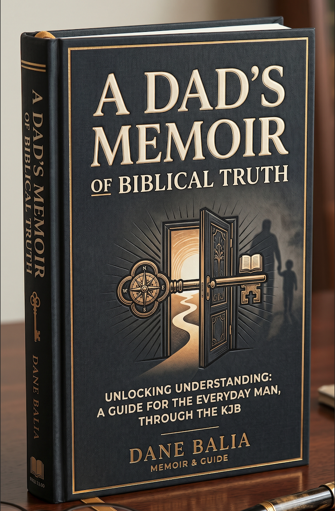

Welcome to my Digital Garden
Software developer sharing insights on tech, faith, and creativity

New book · In progress
A Dad's Memoir of Biblical Truth
A journey through Scripture to equip the everyday man — written one chapter at a time, in the open.
tech
View all →
Tech Insights
faith
View all →
Faith & Wisdom
creative
View all →